- 00 开篇词 打破四大认知局限，进阶高级性能工程师.md.html
- 01 性能工程：为什么很多性能测试人员无法对性能结果负责？.md.html
- 02 关键概念：性能指标和场景的确定.md.html
- 03 核心分析逻辑：所有的性能分析，靠这七步都能搞定.md.html
- 04 如何构建性能分析决策树和查找瓶颈证据链？.md.html
- 05 性能方案：你的方案是否还停留在形式上？.md.html
- 06 如何抽取出符合真实业务场景的业务模型？.md.html
- 07 性能场景的数据到底应该做成什么样子？.md.html
- 08 并发、在线和TPS到底是什么关系？.md.html
- 09 如何设计全局和定向监控策略？.md.html
- 10 设计基准场景需要注意哪些关键点？.md.html
- 11 打开首页之一：一个案例，带你搞懂基础硬件设施的性能问题.md.html
- 12 打开首页之二：如何平衡利用硬件资源？.md.html
- 13 用户登录：怎么判断线程中的Block原因？.md.html
- 14 用户信息查询：如何解决网络软中断瓶颈问题？.md.html
- 15 查询商品：资源不足有哪些性能表现？.md.html
- 16 商品加入购物车：SQL优化和压力工具中的参数分析.md.html
- 17 查询购物车：为什么铺底参数一定要符合真实业务特性？.md.html
- 18 购物车信息确定订单：为什么动态参数化逻辑非常重要？.md.html
- 19 生成订单信息之一：应用JDBC池优化和内存溢出分析.md.html
- 20 生成订单信息之二：业务逻辑复杂，怎么做性能优化？.md.html
- 21 支付前查询订单列表：如何分析优化一个固定的技术组件？.md.html
- 22 支付订单信息：如何高效解决for循环产生的内存溢出？.md.html
- 23 决定容量场景成败的关键因素有哪些？.md.html
- 24 容量场景之一：索引优化和Kubernetes资源分配不均衡怎么办？.md.html
- 25 容量场景之二：缓存对性能会有什么样的影响？.md.html
- 26 稳定性场景之一：怎样搞定业务积累量产生的瓶颈问题？.md.html
- 27 稳定性场景之二：怎样搞定磁盘不足产生的瓶颈问题？.md.html
- 28 如何确定异常场景的范围和设计逻辑？.md.html
- 29 异常场景：如何模拟不同组件层级的异常？.md.html
- 30 如何确定生产系统配置？.md.html
- 31 怎么写出有价值的性能报告？.md.html
- 我们这个课程的系统是怎么搭建起来的？.md.html
- 结束语 做真正的性能项目.md.html
- 捐赠
14 用户信息查询：如何解决网络软中断瓶颈问题？
你好，我是高楼。
这节课我们接着来整另一个接口：用户信息查询。通过这个接口，我们一起来看看，当网络软中断过高时，会对TPS产生什么样的影响。其实对于这一点的判断，在很多性能项目中都会出现，而其中的难点就在于，很多人都无法将软中断跟响应时间慢和TPS所受到的影响关联起来。今天我就带你来解决这个问题。
同时，我也会给你讲解如何根据硬件配置及软件部署情况，做纯网络层的基准验证，以确定我们判断方向的正确性，进而提出具有针对性的优化方案。而我们最终优化的效果，会通过TPS对比来体现。
压力数据
我们先来看用户信息查询的压力数据情况如何。因为我们现在测试的是单接口，而用户信息查询又需要有登录态，所以我们要先跑一部分Token数据出来，再执行用户信息查询接口。
准备好Token数据后，第一次用户信息查询如下：
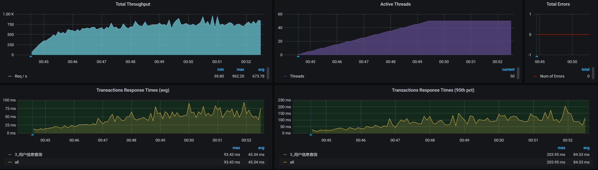
这个步骤只是试验一下，持续时间长是为了查找问题。从上图来看，这个接口的起点不错，已经达到750左右。
不过，性能瓶颈也比较明显：响应时间随着压力线程的增加而增加了，TPS也达到了上限。对于这样的接口，我们可以调优，也可以不调优，因为这个接口当前的TPS可以达到我们的要求。只不过，本着“活着不就是为了折腾”的原则，我们还是要分析一下这个接口的瓶颈到底在哪里。
还是按照我们之前讲过的分析思路，下面我们来分析这个问题。
看架构图
从链路监控工具中，我们拉出架构图来，这样简单直接，又不用再画图了，真的是懒人必知技能。
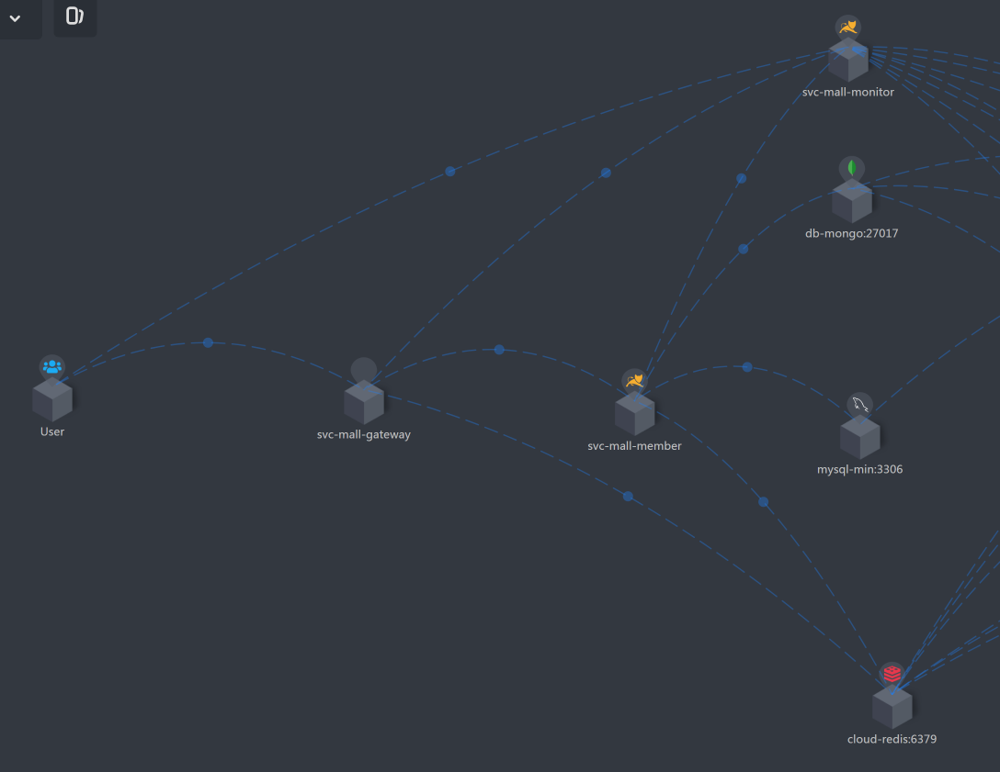
从上图可以知道，用户信息查询的路径是User - Gateway - Member - MySQL。
你也许会问，图中不是还有Redis、MongoDB、Monitor吗？是的，这些我们也要记在脑子里。这个接口用到了Redis，如果接口有问题，变慢了，我们也要分析；MongoDB并没有用上，所以我们不管它；Monitor服务是Spring Boot Admin服务，我们也暂且不管它，后面需要用到的时候再说。
注意，这一步是分析的铺垫，是为了让我们后面分析时不会混乱。
拆分响应时间
在场景数据中，我们明显看到响应时间慢了，那我们就要知道慢在了哪里。我们根据上面的架构图知道了用户信息查询接口的路径，现在就要拆分这个响应时间，看一看每一段消耗了多长时间。
如果你有APM工具，那可以直接用它查看每一段消耗的时间。如果你没有，也没关系，只要能把架构图画出来，并把时间拆分了就行，不管你用什么招。
另外，我啰嗦一句，请你不要过分相信APM工具厂商的广告，咱们还是要看疗效。在追逐技术的同时，我们也需要理智地判断到底是不是需要。
具体的拆分时间如下：
- User -Gateway
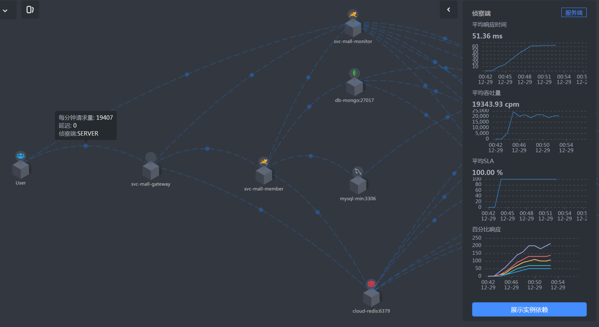
- Gateway上消耗的时间
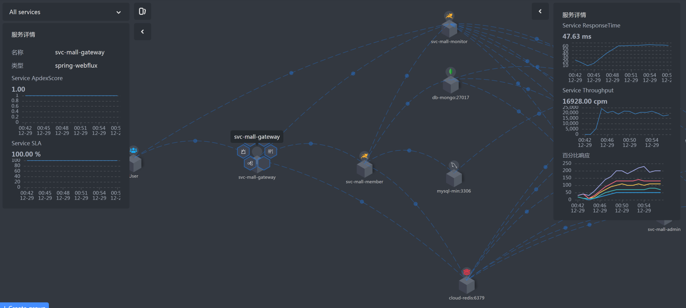
- Gateway -Member
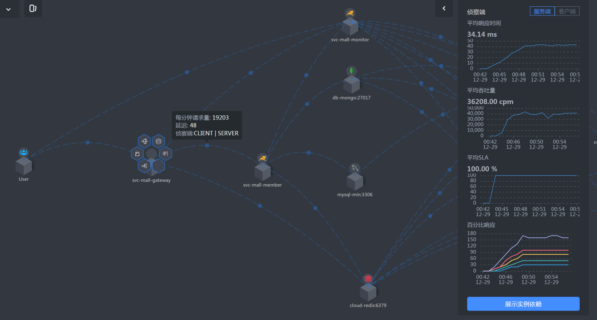
- Member上消耗的时间
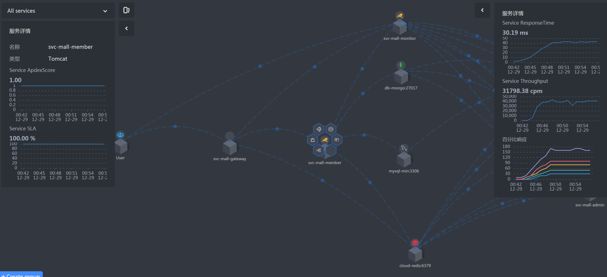
- Member到DB的时间
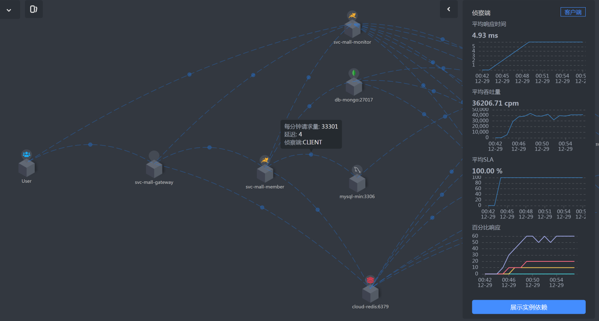
我把上述拆分后的时间都整理到我们的架构图中：
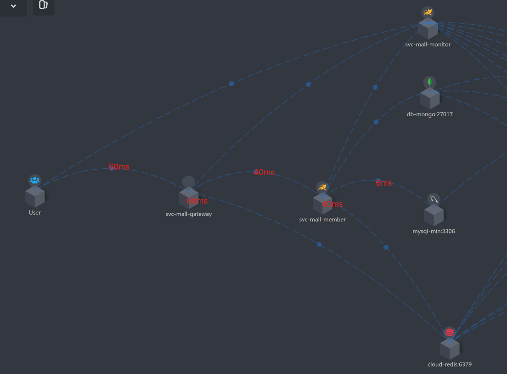
看到这张图，思路变得特别清晰了，有没有？根据上图的时间拆分，我们明显看到Member服务上消耗时间更多一点，所以下一步我们去关注Member服务。
全局监控分析
还是一样，我们先看全局监控：
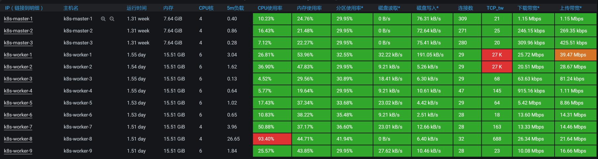
其中，worker-8的CPU用得最多，我们先从这里下手。
这里我要跟你强调一下，在全局监控的思路中，不是说我们看了哪些数据，而是我们要去看哪些数据。这时候，你就必须先有一个全局计数器的东西。比如说在Kubernetes里，我们就要有这样的思路：
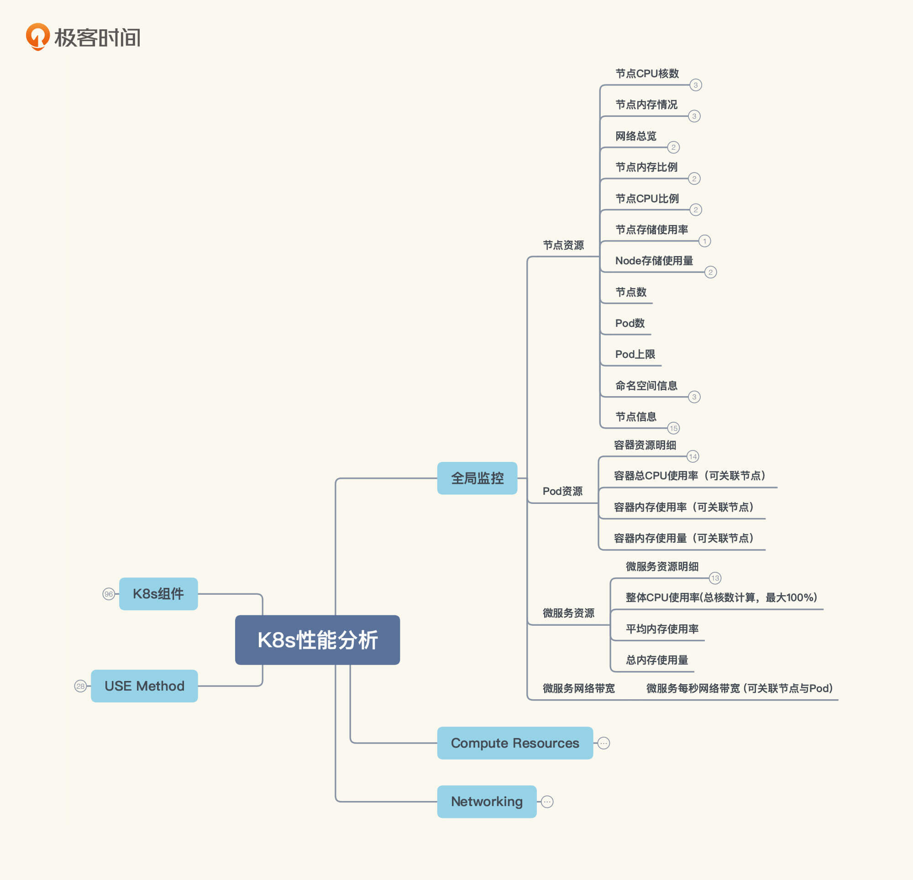
也就是说，我们要先把全局监控的计数器都罗列出来，然后再一个一个查去。
其实，这里面不止是罗列那么简单，它还要有相应的逻辑。那怎么弄懂这个逻辑呢？这就要依赖于性能分析人员的基础知识了。我经常说，要想做全面的性能分析，就必须具备计算机基础知识，而这个知识的范围是很大的。之前我画过一张图，现在我做了一些修正，如下所示：
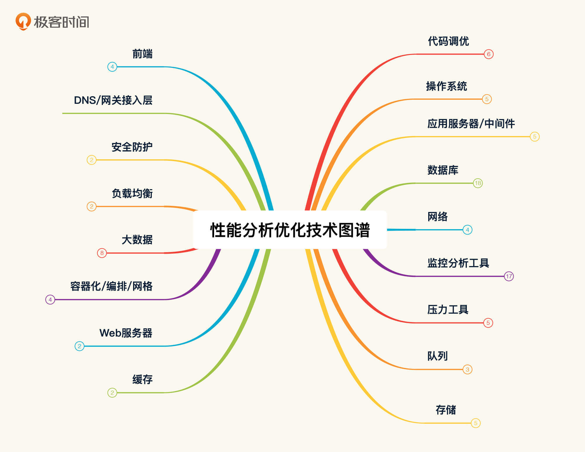
图中这些内容，都是我们做性能分析时会遇到的东西。有人可能会说，这些已经远远超出性能工程师的技能范围了。所以我要再强调一下，我讲的一直都是性能工程。在整个项目的性能分析中，我并不限定技术的范围，只要是用得上，我们都需要拿出来分析。
前面我们说是worker-8上的CPU资源用得最多，所以我们来查一下被测的服务，也就是Member服务，是不是在worker-8上。
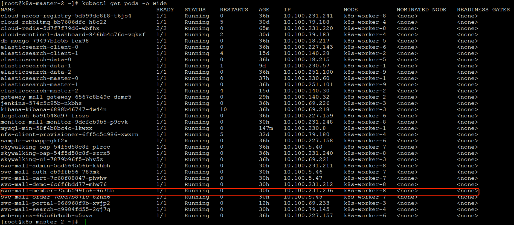
从上图看，Member服务确实是在worker-8上。
那下一步我们就要进到这个节点查看一下。查看之后，如果全是us cpu消耗，那我觉得这个基准测试就可以结束了。因为对于一个应用来说，us cpu高本来就是非常合理的情况。
之前一个做第三方测试的人跑过来跟我说，甲方爸爸不喜欢看到CPU使用率太高，让他想尽一切办法把CPU降下来。可是他没有什么招，所以就来问我该怎么办。
我问他测试的目标是什么。他回答客户并不关心TPS啥的，只说要把CPU降下来。我说这简单，你把压力降下来，CPU不就降下来了吗？本来以为只是一句调侃的话，结果他真去做了，并且还被客户接受了！后来我反思了一下，因为自己错误引导了性能行业的发展方向。
从职业的角度来说，我们对一些不懂的客户，最好要有一个良好的沟通，用对方能听懂的语言来解释。不过，在不该让步的时候，我们也不能让步。这才是专业的价值，不能是客户要什么，我们就给什么。
现在我们来看一下这个节点的top数据：
[root@k8s-worker-8 ~]# top
top - 02:32:26 up 1 day, 13:56, 3 users, load average: 26.46, 22.37, 14.54
Tasks: 289 total, 1 running, 288 sleeping, 0 stopped, 0 zombie
%Cpu0 : 73.9 us, 9.4 sy, 0.0 ni, 3.5 id, 0.0 wa, 0.0 hi, 12.5 si, 0.7 st
%Cpu1 : 69.8 us, 12.5 sy, 0.0 ni, 4.3 id, 0.0 wa, 0.0 hi, 12.8 si, 0.7 st
%Cpu2 : 71.5 us, 12.7 sy, 0.0 ni, 4.2 id, 0.0 wa, 0.0 hi, 10.9 si, 0.7 st
%Cpu3 : 70.3 us, 11.5 sy, 0.0 ni, 6.1 id, 0.0 wa, 0.0 hi, 11.5 si, 0.7 st
KiB Mem : 16266296 total, 3803848 free, 6779796 used, 5682652 buff/cache
KiB Swap: 0 total, 0 free, 0 used. 9072592 avail Mem
PID USER PR NI VIRT RES SHR S %CPU %MEM TIME+ COMMAND
30890 root 20 0 7791868 549328 15732 S 276.1 3.4 23:17.90 java -Dapp.id=svc-mall-member -javaagent:/opt/skywalking/agent/sky+
18934 root 20 0 3716376 1.6g 18904 S 43.9 10.3 899:31.21 java -XX:+UnlockExperimentalVMOptions -XX:+UseCGroupMemoryLimitFor+
1059 root 20 0 2576944 109856 38508 S 11.1 0.7 264:59.42 /usr/bin/kubelet --bootstrap-kubeconfig=/etc/kubernetes/bootstrap-
1069 root 20 0 1260592 117572 29736 S 10.8 0.7 213:48.18 /usr/bin/dockerd -H fd:// --containerd=/run/containerd/containerd.
15018 root 20 0 5943032 1.3g 16496 S 6.9 8.6 144:47.90 /usr/lib/jvm/java-1.8.0-openjdk/bin/java -Xms2g -Xmx2g -Xmn1g -Dna+
4723 root 20 0 1484184 43396 17700 S 5.9 0.3 89:53.45 calico-node -felix
在这个例子中，我们看到si cpu（软中断消耗的CPU）有10%多，其实这只是一个瞬间值，在不断跳跃的数据中，有很多次数据都比这个值大，说明si消耗的CPU有点高了。对于这种数据，我们就要关心一下了。
定向监控分析
我们进一步来看软中断的变化，既然软中断消耗的CPU高，那必然是要看一下软中断的计数器了：
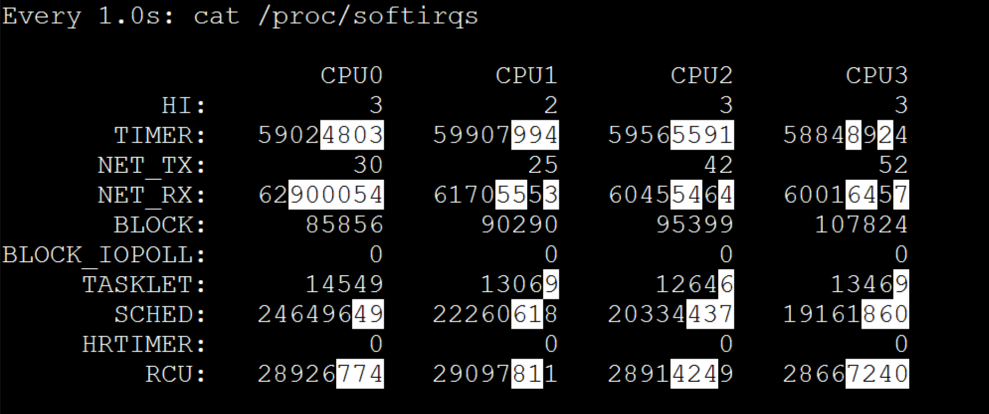
上图是一张瞬间的截图，而在实际的观察过程中，我们是要多看一会儿时间的。请你注意图中这些有白底的数字，在观察中，这些数值增加的越大说明中断越高。而我在观察的过程中，看到的是NET_RX变化的最大。
现在，从si cpu高到NET_RX中断多的逻辑基本上清楚了：因为NET_RX都是网络的接收，所以NET_RX会不断往上跳。
不过，请你注意，这个中断即使是正常的，也需要不断增加。我们要判断它合理不合理，一定要结合si cpu一起来看。并且在网络中断中，不止是软中断，硬中断也会不断增加。
从上图来看，网络中断已经均衡了，没有单队列网卡的问题。我们再看一下网络带宽。
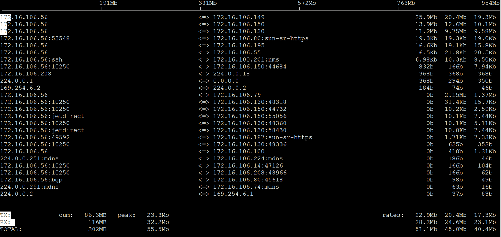
总共用了50Mb的带宽，中断就已经达到10%，也就是说带宽没有完全用满，可是中断已经不低了，这说明我们的数据包中还是小包居多。
于是我们做如下调整。调整的方向 就是增加队列长度和缓冲区大小，让应用可以接收更多的数据包。
-- 增加网络的队列长度
net.core.netdev_max_backlog = 10000 （原值：1000）
- 增加tomcat的队列长度为10000(原值1000)
server:
port: 8083
tomcat
accept-count: 10000
-- 改变设备一次可接收的数据包数量
net.core.dev_weight = 128 （原值64）
-- 控制socket 读取位于等待设备队列中数据包的微秒数
net.core.busy_poll = 100 （原值0）
-- 控制 socket 使用的接收缓冲区的默认大小
net.core.rmem_default = 2129920 （原值：212992）
net.core.rmem_max = 2129920 （原值：212992）
-- 繁忙轮询
net.core.busy_poll = 100
这个参数是用来控制了socket 读取位于等待设备队列中数据包的微秒数
一顿操作猛如虎之后，原本满怀希望，然而再次查了TPS曲线之后，发现并没有什么卵用，让我们把一首《凉凉》唱出来。
我仔细想了一遍发送和接收数据的逻辑。既然上层应用会导致us cpu高，而si cpu高是因为网卡中断多引起的，那我们还是要从网络层下手。所以，我做了网络带宽能达到多高的验证。我先列一下当前的硬件配置。
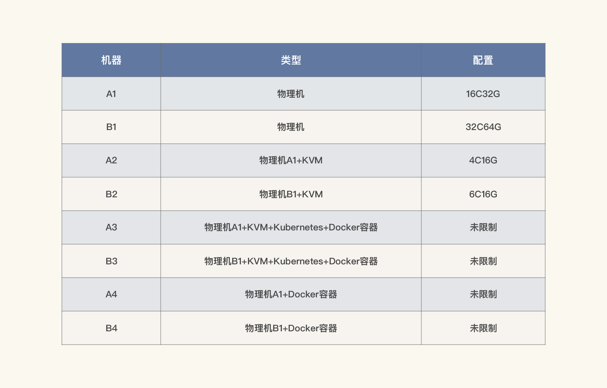
我们通过iperf3直接测试网络，试验内容如下：
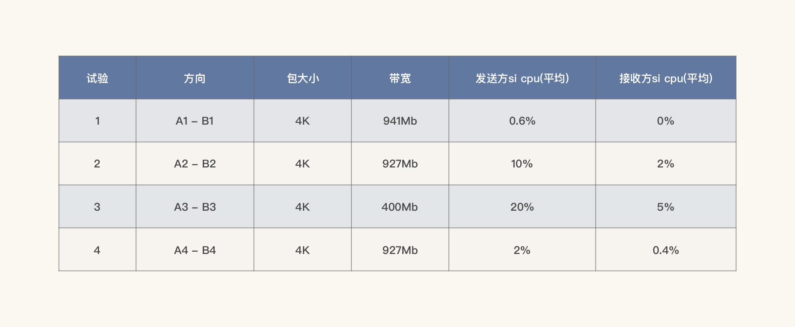
从上面的数据可以看到，在不同的层面进行纯网络测试，si是有很大区别的。当网络流量走了KVM+Kubernetes+Docker的结构之后，网络损失居然这么高，si cpu也上升了很多。
这也解释了为什么现在很多企业放弃虚拟化，直接用物理机来跑Kubernetes了。
由于当前K8s用的是Calico插件中的IPIP模式，考虑到BGP模式的效率会高一些，我们把IPIP模式改为BGP。这一步也是为了降低网络接收产生的软中断。
那IPIP和BGP到底有什么区别呢？对于IPIP来说，它套了两次IP包，相当于用了一个IP层后，还要用另一个IP层做网桥。在通常情况下，IP是基于MAC的，不需要网桥；而BGP是通过维护路由表来实现对端可达的，不需要多套一层。但是BGP不是路由协议，而是矢量性协议。关于IPIP和BGP更多原理上的区别，如果你不清楚，我建议你自学一下相关的网络基础知识。
我们把IPIP修改为BGP模式之后，先测试下纯网络的区别，做这一步是为了看到在没有应用压力流量时，网络本身的传输效率如何：
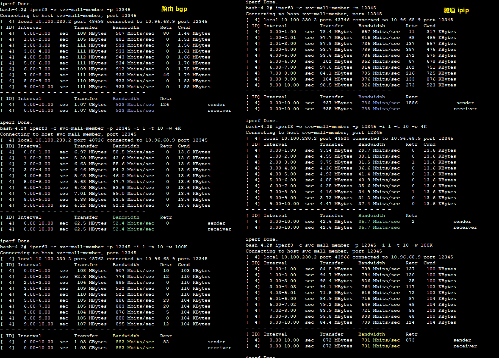
根据上面的测试结果，将带宽在不同的网络模式和包大小时的具体数值整理如下：
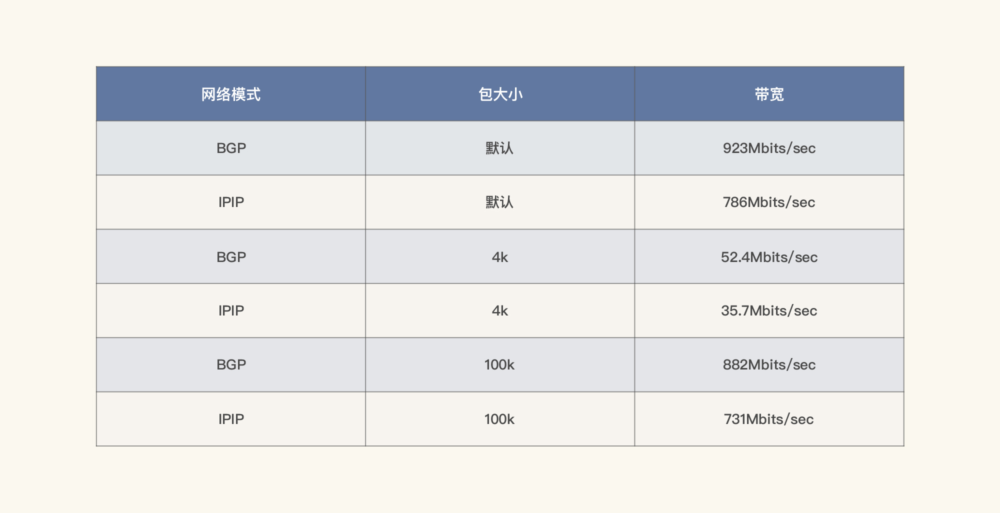
可以看到，BGP的网络能力确实要强一些，差别好大呀。
我们再接着回去测试下接口，结果如下：
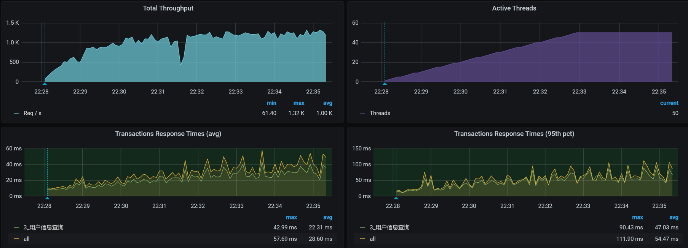
再看软中断，看一下BGP模式下的软中断有没有降低：
top - 22:34:09 up 3 days, 55 min, 2 users, load average: 10.62, 6.18, 2.76
Tasks: 270 total, 2 running, 268 sleeping, 0 stopped, 0 zombie
%Cpu0 : 51.6 us, 11.5 sy, 0.0 ni, 30.0 id, 0.0 wa, 0.0 hi, 6.6 si, 0.3 st
%Cpu1 : 54.4 us, 9.4 sy, 0.0 ni, 28.2 id, 0.0 wa, 0.0 hi, 7.7 si, 0.3 st
%Cpu2 : 55.9 us, 11.4 sy, 0.0 ni, 26.9 id, 0.0 wa, 0.0 hi, 5.9 si, 0.0 st
%Cpu3 : 49.0 us, 12.4 sy, 0.0 ni, 32.8 id, 0.3 wa, 0.0 hi, 5.2 si, 0.3 st
KiB Mem : 16266296 total, 7186564 free, 4655012 used, 4424720 buff/cache
KiB Swap: 0 total, 0 free, 0 used. 11163216 avail Mem
优化效果
通过上面的调整结果，我们看到了软中断确实降低了不少，但是我们还是希望这样的优化体现到TPS上来，所以我们看一下优化之后TPS的效果。
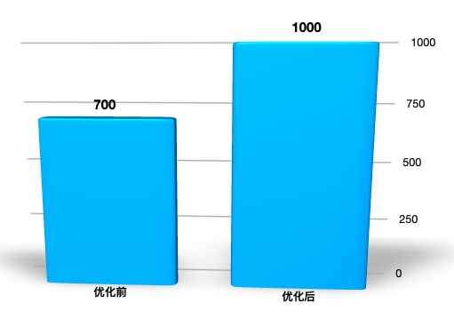
si cpu有降低：
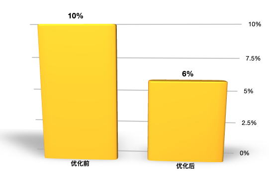
总结
当我们看到一个接口已经满足了业务要求时，从成本上来说，我们不应该花时间再去收拾它。但是，从技术上来说，我们对每一个接口的性能结果，都要达到“知道最终瓶颈在哪里”的程度。这样才方便我们在后续的工作中继续优化。
在这节课的例子中，我们从si cpu开始分析，经过软中断查找和纯网络测试，定位到了Kubernetes的网络模式，进而我们选择了更加合理的网络模式。整个过程穿过了很长的链路，而这个思维也是在我在宣讲中一贯提到的“证据链”。
最后，我还是要强调一遍，性能分析一定要有证据链，没有证据链的性能分析就是耍流氓。我们要做正派的老司机。
课后作业
我给你留两道题，请你思考一下：
- 为什么看到NET_RX中断高的时候，我们会想到去测试一下纯网络带宽？
- 你能总结一下，这节课案例的证据链吗？
记得在留言区和我讨论、交流你的想法，每一次思考都会让你更进一步。
如果你读完这篇文章有所收获，也欢迎你分享给你的朋友，共同学习进步。我们下一讲再见！
© 2019 - 2023 Liangliang Lee. Powered by gin and hexo-theme-book.